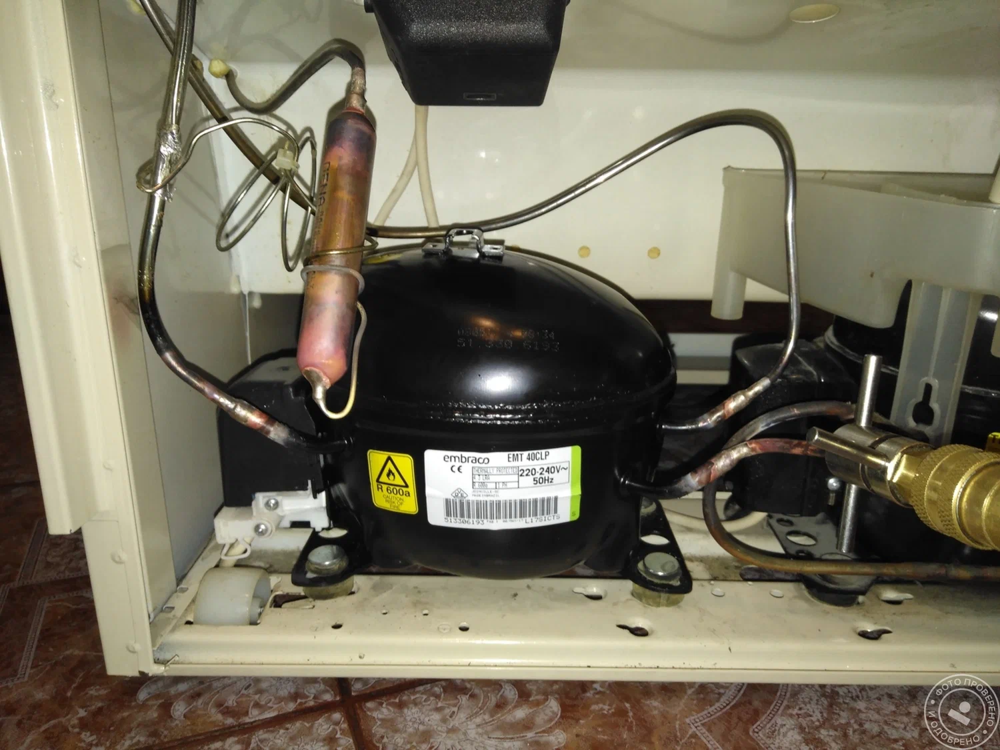
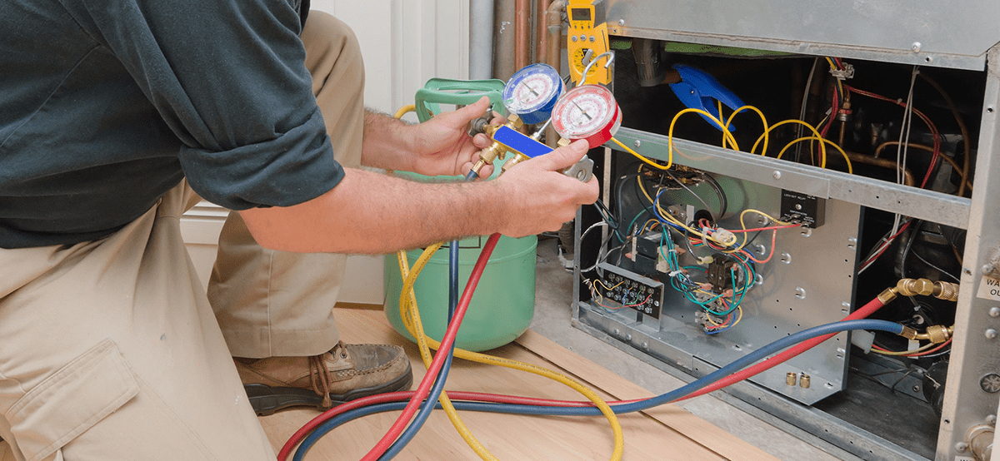
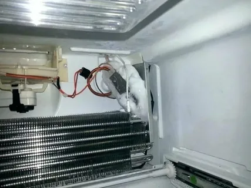
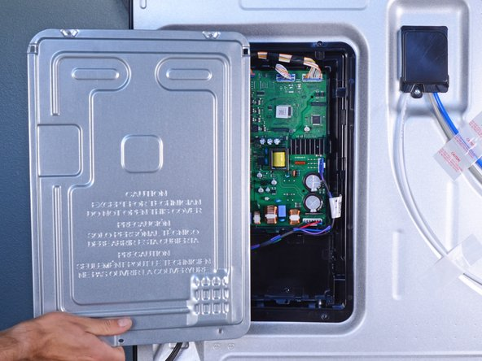
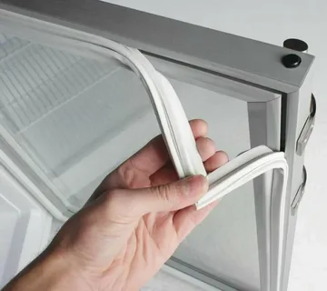
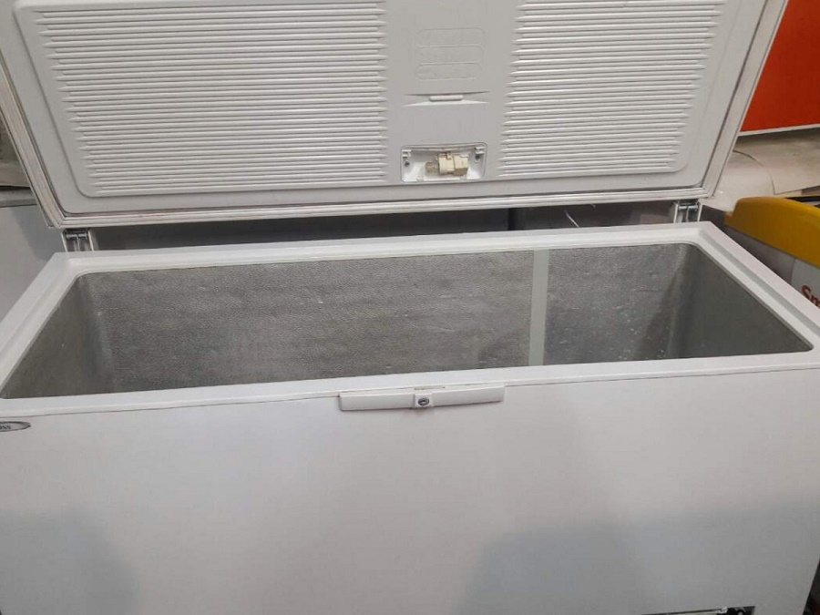

Тоңазытқыштарды Астанада үйде жөндеу
Кез келген маркадағы тоңазытқыштар мен мұздатқыштарды үйіңізде жөндейміз: релені ауыстырудан компрессорды ауыстыруға дейін. Шебер өтініш күні келіп, бағаны жұмыс басталғанға дейін айтады.
Неге бізге хабарласады
Өтініш күні келеміз
Әдетте шебер қоңыраудан кейін 1–2 сағатта келеді. Ыңғайлы уақытқа, соның ішінде кешке және демалыс күндеріне жазылуға болады.
Орнында жөндейміз
10 ақаудың 9-ын пәтердің өзінде жоямыз. Тоңазытқышты ешқайда тасудың қажеті жоқ, шебер жиі қажет бөлшектерді өзімен алып жүреді.
Баға жұмысқа дейін белгілі
Жөндесек, диагностика тегін. Соманы тексерістен кейін айтамыз, ол жұмыс барысында өзгермейді.
12 айға дейін кепілдік
Компрессорға — 12 ай, басқа жұмыстарға — 6 айға дейін. Жазбаша кепілдік талонын береміз.
Тексерген соң төлейсіз
Тоңазытқыш сіздің көзіңізше суық жинағанда төлейсіз. Қолма-қол, Kaspi аударымы, ұйымдарға — шот бойынша.
Нені жөндейміз
Әр ақаудың бағасы мен жиі қойылатын сұрақтарға жауабы бар өз беті бар.
Компрессорды ауыстыру
Гүрілдейді, бірақ суытпайды, мотор ыстық — компрессорды үйде ауыстырамыз.
Фреон толтыру
Ағып кетуді тауып жоямыз, вакуумдап, салмақ бойынша толтырамыз.
No Frost жөндеу
Мұздатқышта мұз, тоңазытқыш камерада жылы, желдеткіш шулайды.
Термостат, датчиктер және реле
Қосылмайды, шырт етеді немесе тоқтаусыз қатырады — көбіне термостат не реле.
Басқару платасын жөндеу
Дисплейде қате, түймелер жұмыс істемейді, индикаторлар жыпылықтайды.
Тығыздағышты ауыстыру
Есік тығыз жабылмайды, резеңкеде жарықшақ, камерада конденсат пен қар.
Мұздатқыштар мен сандықтар
Мұздатқыш камералар мен сандықтар — пәтерде, жеке үйде немесе гаражда.
Сауда тоңазытқыштары мен витриналар
Дүкендер, кафелер мен мейрамханаларға арналған витриналар, шкафтар мен сандықтар.
Тоңазытқышқа не болды?
Не көріп тұрғаныңызды таңдаңыз — әдетте себебі неде және жөндеу қанша тұратынын айтамыз.
Жөндеу бағалары
- Шақыру және диагностикажөндеу кезінде тегін
- Іске қосу релесін ауыстыру7 000 ₸ бастап
- Температура датчигін ауыстыру8 000 ₸ бастап
- Желдеткішті ауыстыру9 000 ₸ бастап
- Термостатты ауыстыру10 000 ₸ бастап
- No Frost еріту ТЭНін ауыстыру12 000 ₸ бастап
- Есік тығыздағышын ауыстыру12 000 ₸ бастап
- Вакуумдаумен фреон толтыру15 000 ₸ бастап
- Басқару платасын жөндеу15 000 ₸ бастап
- Компрессорды ауыстыру (жұмыс)25 000 ₸ бастап
- Қала сыртына бару: Қосшы, Талапкер, Қоянды+3 000 ₸
Бағалар жиі қажет бөлшектерді (реле, датчиктер, термостаттар, ТЭНдер, желдеткіштер) орнатумен бірге көрсетілген. Компрессор мен жаңа басқару платасы бөлек төленеді — бағасын жөндеуге дейін келісеміз. Жөндеу кезінде шақыру мен диагностика тегін, жөндеуден бас тартсаңыз — 5 000 ₸.
Жөндеу қалай өтеді
- 01
Қоңырау немесе хабарлама
Не болғанын сипаттап, тоңазытқыш маркасын айтыңыз — телефонмен немесе WhatsApp арқылы.
- 02
Шебердің келуі
Өтініш күні, әдетте 1–2 сағатта. Ыңғайлы уақытты таңдауға болады.
- 03
Диагностика және баға
Шебер себебін тауып, нақты соманы жұмыс басталғанға дейін айтады.
- 04
Орнында жөндеу
Бөлшекті ауыстырып, камералардың суық жинайтынын тексереміз.
- 05
Төлем және кепілдік
Тексерген соң төлеп, кепілдік талонын аласыз.
Біздің жұмыстар
Шеберлердің сапарларынан фото.






Клиенттердің пікірлері
Клиенттердің WhatsApp-тағы хабарламаларының скриншоттары.


Жиі қойылатын сұрақтар
Тоңазытқышты жөндеу қанша тұрады?
Ақауына байланысты: ұсақ жөндеу (реле, датчик) — 7 000–12 000 ₸, фреон толтыру — 15 000 ₸ бастап, компрессорды ауыстыру — жұмысы 25 000 ₸ бастап және компрессордың бағасы. Жөндеу кезінде диагностика тегін, бас тартсаңыз — 5 000 ₸.
Шебер қаншалықты тез келеді?
Өтініш күні, әдетте 1–2 сағат ішінде. Күн сайын 8:00-ден 22:00-ге дейін жұмыс істейміз, таңертеңгі уақытқа алдын ала жазылуға болады.
Үйде жөндейсіз бе, әлде алып кетесіз бе?
10 жағдайдың 9-ында орнында, пәтерде жөндейміз. Кейде электрондық платаны шеберханаға 1–2 күнге алып кетеміз, тоңазытқыштың өзін тасымаймыз.
Кепілдік қандай?
Компрессорды ауыстыруға — 12 ай, басқа жұмыстарға — 6 айға дейін. Жазбаша талон береміз: мерзім ішінде ақау қайталанса, тегін түзетеміз.
Қалай төлеуге болады?
Жөндеп, тексергеннен кейін: қолма-қол немесе Kaspi аударымы. Ұйымдар үшін — шарт, шот және орындалған жұмыстар актісі.
Астанада тоңазытқыштарды жөндеу — HOLOD26
HOLOD26 — Астанадағы тоңазытқыштар мен мұздатқыштарды жөндеу қызметі. Қаланың барлық аудандарына — Есіл, Алматы, Сарыарқа, Байқоңыр және Нұра аудандарына, сондай-ақ Қосшы, Талапкер және Қояндыға барамыз. Барлық танымал маркалардың тұрмыстық тоңазытқыштарын жөндейміз: Samsung, LG, Bosch, Indesit, Atlant, Beko, Haier, Liebherr, Electrolux, Ariston, Artel, Midea — бір және екі камералы, Side-by-Side, кіріктірілген және No Frost жүйесі бар тоңазытқыштар.
Ақаулардың көбін бір келгенде жоямыз. Шебер жиі қажет бөлшектерді — іске қосу релелерін, термостаттарды, датчиктерді, еріту ТЭНдерін, желдеткіштерді, сүзгілер мен фреонды өзімен алып жүреді. Қажетті бөлшек болмаса, оны 1–2 күнде әкелеміз және бағасын алдын ала айтамыз.
Біз алдымен себебін анықтап, содан кейін ғана соманы айтамыз. Клиенттер көбіне «компрессор күйіп кетті» деп хабарласады, ал шын мәнінде бірнеше мың теңге тұратын реле бұзылған болып шығады. Сондықтан жөндеуге келіссеңіз, диагностика тегін, ал жұмыс басталған соң баға өзгермейді.
Тұрмыстық техникадан басқа сауда тоңазытқыш жабдығына қызмет көрсетеміз: дүкендер мен кафелердің витриналары, тоңазытқыш шкафтары мен сандықтары. Ұйымдармен шарт және қолма-қол ақшасыз есеп бойынша жұмыс істейміз.